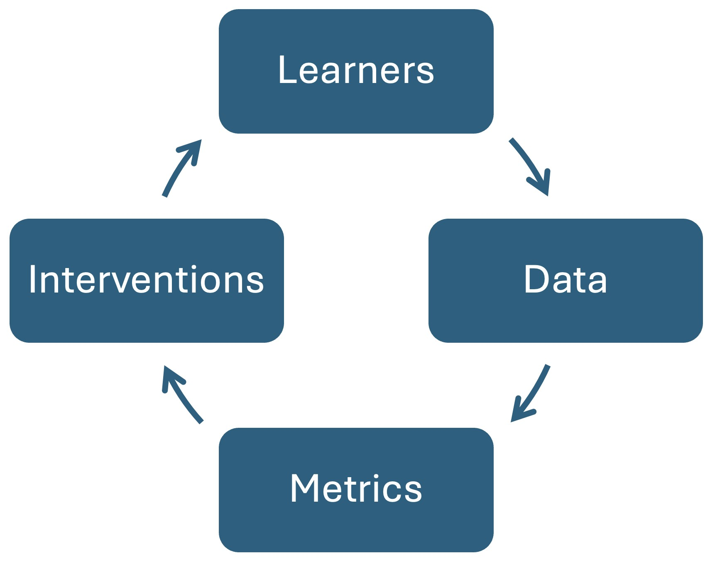

1 Unpacking learning in the age of AI: Bridging AI, Complexity, and Precision Education
1 Introduction
The birth of learning analytics as a field marked a vast surge of data-intensive studies and exponential growth of methods and applications. However, there was a lack of reliable methodological guidance for researchers and practitioners that remained unfulfilled for more than a decade. As a response, we released the first methodological book in 2024 [1]. The book Learning Analytics Methods and Tutorials: A Practical Guide Using R offered a much-needed resource for both newcomers and experts in the learning analytics field. The book started by introducing the R programming language to help beginners get up to speed with their R programming skills [2–4]. Most importantly, the book covered the foundational methods in learning analytics, such as sequence analysis, process mining, predictive modeling, Markov models, and social network analysis [5–8]. While those methods constitute the bedrock of learning analytics research and much of the advanced techniques, several aspects still require coverage. During the last few years —and especially the previous two— the field has witnessed remarkable changes, especially those related to artificial intelligence (AI) and the emergence of generative AI [9, 10]. Taken together, there is still a gap in methods and a need to catch up with the fast-advancing field and the recent surge in AI.
To fill this gap, we set out on a journey to create a new book: Advanced Learning Analytics Methods: AI, Precision and Complexity. This book aims to expand on foundational methods and integrate emerging innovations such as AI-driven insights, complexity science, and idiographic approaches, providing a comprehensive toolset to map the learning process. The book builds on the foundation laid by its predecessor, taking a significant step forward both methodologically —covering AI methods and their application in education— and theoretically — exploring idiographic analysis and complexity science. Given the novelty of several topics, the book included a mixture of foundational chapters that offered a comprehensive introduction to these novel topics in thematic sections, i.e., a chapter on complexity, two others on AI, and one on idiographic analysis.
2 Thematic Overview of the Book
The book is structured in four sections covering four main themes. This thematic categorization –albeit imperfect due to the unavoidable overlap– helps align the chapters within a common narrative to facilitate the book organization. Below, we describe each of these sections as well as the included chapters and give an overview of what these chapters discuss, how they are related together, and which parts of the methodological story they tell.
2.1 Section I: Artificial Intelligence
The first section of the book covers the synergies between AI, learning analytics, and education.
Chapter 2 [11] kicks off this section with an overview of AI applications in education, including adaptive learning systems, profiling, and predictive modeling. Moreover, it introduces the main concepts and techniques related to explainable AI (XAI) and how AI can be designed to ensure trustworthiness and equity in AI-driven educational environments. The chapter also provides readers with an understanding of AI in education and XAI’s potentials and serves as a foundation for the remaining chapters presented in this section.
Another focus of this section is predictive modeling with AI, one of the central applications of AI in education [12, 13]. While our previous book covered this topic [14], it was approached from a statistical lens without introducing more recent developments in machine learning (ML). This book section provides a more modern approach to predictive modeling, focusing on methods and workflows to perform ML regression and classification tasks with R. The ability to predict student performance has been a main motivator for adopting learning analytics, and one of the central applications of AI in education. Predictive modeling uses historical data to forecast outcomes such as student grades, providing timely support to at-risk students. Chapter 3 [15] presents ML predictive methods to forecast continuous variables like grades. The methods discussed include Random Forest, K-Nearest Neighbor, Linear Regression, Neural Networks, and Support Vector Machines. The chapter presents two approaches: the traditional predictive modeling workflow and a more contemporary approach using the tidymodels framework. Chapter 4 [16] moves on to classify students based on academic performance levels, such as identifying low achievers or potential dropouts. The chapter begins by illustrating the process with a Random Forest classifier, relying on engagement indicators to distinguish between high and low achievers. It covers the entire modeling workflow, including data preparation, model training, and evaluation with performance metrics, and Goes beyond the classic ML prediction algorithms. Chapter 5 [17] introduces advanced regularization techniques—Least Absolute Shrinkage and Selection Operator (LASSO), Smoothly Clipped Absolute Deviation (SCAD), and Minimax Concave Penalty (MCP)—to construct predictive models. These methods are particularly useful when dealing with a large number of potential predictors, enabling the selection of the most relevant variables to create effective and interpretable models. As such, Chapter 5 is particularly useful in scenarios with complex and high-dimensional data.
The focus is then shifted to XAI as a solution to address some of the issues that arise from applying AI in education [18]. A key barrier to AI adoption is the “opaque” nature of many ML models, which can —and actually do— hinder trust, fairness, and accountability. To address this issue, explainability methods are essential for making predictions —such as identifying at-risk students, grading essays, or detecting plagiarism— that are more transparent and interpretable. Chapter 6 [19] introduces the DALEX R package as a tool for explaining ML models in educational settings and demonstrates how to interpret regression models (e.g., predicting student grades) and classification models (e.g., distinguishing high from low achievers) using variable importance measures, partial dependence plots, and accumulated local effects. Even though the aforementioned global explanation methods can offer aggregate insights into a model’s overall behavior, local explanations are needed to uncover the reasons behind specific outcomes, such as why a particular student was identified as at risk of dropping out. Chapter 7 [20] places the focus on the importance of local explanations in educational settings and explores three widely used techniques: Break Down plots, SHAP (SHapley Additive exPlanations), and LIME (Local Interpretable Model-agnostic Explanations).
These techniques are essential to understand why a certain decision has been made, e.g., why a student has been flagged as “at-risk”, why an essay has been marked as “excellent”, or why an assignment has been labeled as “plagiarized”.
2.2 Section II: Large Language Models and Natural Language Processing
Moving on from predictive modeling, the second section of the book focuses on the transformative role of another aspect of AI —natural language processing (NLP) and large language models (LLMs). NLP offers new opportunities to analyze and interpret textual data, such as student essays, discussion forums, and feedback, which provide deeper insights into learning processes and outcomes. The first chapter [21] introduces LLMs as the foundation of modern advancements in education. LLMs enable a wide range of applications, including automated feedback, question generation, sentiment analysis, and multilingual support, making them invaluable in diverse educational contexts. This chapter explains the foundational mechanisms behind LLMs, such as the transformer architecture. It also highlights the varied applications of LLMs in education, many of which will be explored in detail in later tutorial chapters. The next chapter [22] stresses the importance of utilizing textual data in education to enhance learning analytics systems and support informed pedagogical decisions. It introduces foundational concepts in NLP, including lexical and syntax analysis, corpus creation, and the significance of text preprocessing techniques like tokenization, stemming, lemmatization, and stop word removal, with practical demonstrations. The chapter offers a tutorial on the main NLP applications, including Term Frequency-Inverse Document Frequency (TF-IDF) for keyword identification, Latent Dirichlet Allocation (LDA) for topic modeling, and text summarization and demonstrates how these techniques reveal themes and insights in educational texts. The chapter concludes by showcasing sentiment analysis to evaluate student feedback, providing actionable insights into student perceptions and attitudes.
Chapter 10 [23] addresses the challenges of coding text data in qualitative research, a process often prone to errors and labor-intensive efforts. The chapter explores using LLMs to automate text classification, leveraging word embeddings and BERT-like models through the R package text. The chapter demonstrates an ML pipeline that combines word embeddings with supervised algorithms to achieve accurate text coding. A case study on collaborative problem-solving illustrates how a small sample of manually coded data can train a model to classify the remaining data. The tutorial also includes evaluating coding accuracy using standard machine learning metrics and measures of inter-rater reliability. Finally, the chapter applies learning analytics techniques to compare insights from human-coded and machine-coded data and shows the potential of LLMs to streamline and enhance qualitative research processes.
To conclude this section, Chapter 11 [24] investigates the integration of LLMs into the explainable AI pipeline. The chapter demonstrates how LLMs can automate the transformation of explanations—such as feature importance, partial dependence profiles, and local explanations— into natural language narratives that are accessible to non-technical stakeholders. This work advances the previous chapters on predictive ML, XAI, and learning analytics and emphasizes transparency, inclusivity, and fairness in educational technologies. In doing so, it offers a case study of using LLMs to push the boundaries of traditional predictive analytics and bring nuance to these models.
2.3 Section III: Complex Dynamic Systems
Complex dynamic systems as an analytical framework have lately gained traction in educational research by offering a set of methods that uncover the temporal and relational patterns within the learning process [18, 25–27]. This complex dynamic systems lens has been used to analyze complex learning-related constructs such as engagement [28, 29], self-regulation [26, 30, 31], and language learning [32]. The first chapter in this section [33] addresses the limitations of traditional methods in capturing the dynamic and evolving nature of learning processes by introducing complex systems theory for educational research. It outlines the key characteristics of complex systems, including non-linear relationships, emergent properties, and feedback mechanisms, to explain how educational phenomena develop over time. Methodological approaches such as network analysis and recurrence quantification analysis are described as tools to study relationships and patterns in learning. The chapter concludes by discussing data collection methods that align with a complex systems perspective, providing a foundation for studying learning processes through this innovative lens.
Chapter 13 [34] explores the role of network psychometrics as a complement to traditional factor analysis in education research. It goes one step further from the psychological network chapter in the previous book [35]. While factor analysis simplifies relationships by modeling latent variables like cognitive ability, engagement, and motivation, the network approach examines dynamic, unrestricted associations among observed variables. Building on concepts introduced in our previous book [35], this chapter presents advanced applications of psychological networks in learning analytics. The chapter introduces unique variable analysis to identify the main contributors within complex systems, reducing redundancy and simplifying datasets. Additionally, the chapter demonstrates methods for assessing system integrity through exploratory graph analysis (EGA), hierarchical EGA, and dynamic EGA, which enables tracking changes in system structures over time. Finally, the chapter highlights how psychological networks derived from EGA can be transformed into factor analytic formats, illustrating how these two approaches complement each other in studying the complex structures of learning processes.
Another method suitable for analyzing complex systems is Recurrence Quantification Analysis (RQA), a technique used to identify and quantify the repetition of patterns within nonlinear dynamical systems [36, 37] described in Chapter 14 [38]. RQA examines how system behaviors transition between repetitive and novel sequences over time, analyzing revisits to prior states or the evolution into new behaviors across various time lags. Applicable to both categorical and continuous data, RQA supports the analysis of single or multiple time series across diverse contexts. Although less commonly used in education, RQA has been applied to study collaborative learning, self-regulated learning, and literacy processes, using data sources such as eye tracking, log files, physiology, and verbalizations. This chapter reviews RQA methodologies, highlights its applications in educational research, and discusses how it can quantify learning dynamics, distinguish functional from dysfunctional learning behaviors, and enhance collaborative learning.
Chapter 15 [39] introduces Transition Network Analysis (TNA), a new method for capturing the relational dynamics of temporal processes by modeling transitions between events as a weighted directed network. TNA leverages the potentials of network analysis and process mining, offering insights through graph, node, and edge-level metrics [7, 40], and also provides tools for detecting recurring patterns such as dyads and triads, and for identifying communities [41]. More importantly, TNA incorporates statistical validation methods— e.g., bootstrapping, permutation, and case-dropping techniques—to ensure the robustness of research findings. TNA also enables the inclusion of covariates to explain emergent patterns or examine subgroup differences, enhancing its utility for hypothesis testing and theory development. The chapter includes a practical tutorial using the tna R package and demonstrates these features through a case study on group regulation dynamics [42]. Chapter 16 [43] builds on these foundations and presents Frequency-Based Transition Network Analysis (FTNA) as an alternative approach for modeling the relational dynamics and transitions between states or events. While TNA leverages probabilistic assumptions inherent in Markov models [5], FTNA focuses on summarizing, describing, and visually analyzing observed data without such constraints. The section concluded with Chapter 17 [44], which explores clustering within TNA to uncover heterogeneity in learners’ behavioral patterns. The focus is on using Mixture Markov Models (MMM) [5] to identify latent subgroups with distinct transition probabilities, incorporating covariates to explain the clusters. Through the tna R package [42], the chapter demonstrates how to compare and contrast unique transition dynamics in each cluster and examine centrality measures, communities, and cliques. Additionally, it provides examples of alternative clustering methods, such as distance-based grouping [8], and extends the discussion to other types of transition networks, including frequency-based approaches.
2.4 Section IV: Idiographic Analysis
The last section of the book zooms in on the individual learner through idiographic and individualized approaches that emphasize within-person dynamics [29, 45]. The section explores methods and frameworks designed to capture the unique, dynamic processes of individual learners and provides deeper insights into their cognitive, emotional, and behavioral patterns. The section closes the book by exploring methodologies that prioritize the variability inherent in human learning processes [46], offering practical tools for researchers and educators seeking to tailor interventions to each individual.
An introductory chapter [47] presents the two primary research paradigms in educational research: between-person (nomothetic) and within-person (idiographic) approaches. The between-person approach examines variations across individuals, while the within-person approach focuses on variations within the same individual over time. These paradigms align only if ergodicity holds—when individuals are similar and remain unchanged over time—conditions that are rarely met in educational contexts. The chapter emphasizes the need for within-person analysis and zooms in on idiographic analysis, which focuses on a single individual (N=1). The chapter also outlines the key characteristics, data sources, and methods associated with both approaches and sets the stage for personalized analyses in educational research.
Based on these principles, Chapter 19 [48] examines three analytical approaches—variable-centered, person-centered, and person-specific—that differ in their balance between generalizability and individualization [46]. The variable-centered approach seeks generalizable insights by analyzing relationships across a population, often at the expense of capturing individual differences. The person-centered approach identifies distinct subgroups within the population, highlighting shared patterns among similar individuals. The person-specific, or idiographic, approach focuses entirely on the individual, providing detailed insights into intra-individual variability and processes over time. Through a practical tutorial in R, the chapter demonstrates these methods using dynamic networks and Experience Sampling Method (ESM) data on students’ task value and happiness.
Chapter 20 [49] proposes network analysis methods, specifically Graphical Vector Autoregression (graphicalVAR) and Unified Structural Equation Modeling (uSEM), to model learning processes as complex, dynamic systems [30]. These methods allow researchers to examine both temporal and contemporaneous relationships among variables within individual learners over time. The chapter begins by conceptualizing learning as a networked system, reviewing relevant literature, and discussing the advantages of probabilistic network models in educational contexts. A step-by-step tutorial in R is included, guiding readers through the estimation of idiographic models, visualization of dynamic relationships, and interpretation of results. The tools presented to analyze multivariate time-series data lay the foundation for personalized interventions in educational settings.
Chapter 21 [50] presents Whittle’s approximation of the Maximum Likelihood Estimator (MLE) and highlights its ability to detect long-term memory processes within relatively short time series. The chapter explains the foundational principles of Whittle’s MLE and demonstrates its application in R to analyze motivational dynamics, specifically the interplay between approach and avoidance behaviors in academic settings. Finally, the chapter explores the theoretical and practical implications of identifying long-memory processes in education, shedding light on how these insights can inform research and practice in understanding sustained learning and behavior patterns.
The last chapter of this section [51] presents a tutorial on using AutoML to streamline and scale predictive modeling in education, with a focus on idiographic analysis. AutoML simplifies the ML pipeline, enabling the creation of individually optimized models tailored to each student’s unique data. The tutorial demonstrates how to use AutoML to fit and manage multiple datasets, automating the process of developing personalized models. Additionally, it showcases explainable AI techniques to interpret key predictors, providing transparent insights into the variables that drive individual outcomes [52]. This complete pipeline highlights the potential of AutoML to deliver automated, real-time, and trustworthy insights for idiographic educational research and practice. As such, this chapter combines ML, explainable AI, idiographic analysis and complex systems.
3 A Call to Innovate
The convergence of AI, complex systems theory, and idiographic analysis opens new paths for expanding the boundaries of education research in general and learning analytics in particular. This section discusses some of these potentials, aligning with Clow’s learning analytics lifecycle [53] (Figure 1.1).

First, regarding learners, the chapters of this book have discussed several important synergy points where innovation is ready to take place. The AI technologies discussed in Chapter 2 [11], and especially those powered by LLMs (discussed in Chapter 8 [21]), offer unprecedented opportunities for personalized learning, tailoring learning experiences to each specific learner. As a result, adopting an idiographic lens [47] to treat each individual learner as a single unit of analysis is needed to better understand individual learning trajectories enabled by such personalization. This lens allows to identify patterns in learners’ behaviors, preferences, and progress, which are often concealed by aggregate analyses [48]. Moreover, learning processes usually involve multiple interacting constructs, such as motivation, engagement, and prior knowledge, which influence each other and evolve over time. Viewing these interactions through the lens of complexity allows us to recognize emergent patterns that are not apparent when constructs are studied in isolation [33]. Combining both approaches (idiographic and complexity) in light of recent innovations in AI in education is a first step towards studying personalized learning [49].
When it comes to data, the second stage of the learning analytics lifecycle, the focus shifts to the collection, integration, and preparation of diverse data sources to support meaningful analyses. A longstanding problem in learning analytics is balancing the tradeoff between gathering meaningful, high-quality data and automating its analysis to enable timely interventions. While multimodal data—such as behavioral logs, textual inputs, and even physiological signals—can provide a deeper understanding of learning processes, the complexity of such data often requires sophisticated preprocessing and modeling techniques and/or manual coding or inspection, which can delay actionable insights.
To address this challenge, recent advancements in AI, particularly LLMs, have demonstrated significant potential in automating the interpretation of unstructured data [21]. These models can extract meaningful patterns from text and synthesize multimodal information. Some chapters of the book deal with the problem of automatically synthesizing or coding textual information [22, 23]. However, it should be reiterated that automated analysis must be accompanied by careful consideration of data quality, representativeness, and fairness. Poorly integrated, unbalanced, or incomplete data can lead to biased models and misguided interventions, which risks compromising the learner-centered approach central to fair and effective learning analytics. In this regard, several chapters of the book cover XAI [11, 19, 20, 24], a central tool to audit AI decisions and detect potential biases in ML models.
The metrics phase of the learning analytics lifecycle deals with the selection, development, and application of methods and metrics that are capable of capturing, analyzing, and interpreting the complexity of educational data. As a methodological tutorial-style book, we make our most impactful contributions in this phase. While our previous book focused on the foundational methods of learning analytics, this new volume contributes state-of-the-art techniques and tools for advancing the metrics phase of the learning analytics lifecycle. The most important contribution is a novel method —TNA—, presented for the first time at LAK 2025 [40], which combines Markov models and network analysis, offering a strong statistical framework to model temporal processes [39, 44].
In addition to TNA, this book sheds light on other new methods that have yet to gain widespread adoption in the learning analytics community. EGA aims to identify latent constructs and their relationships within psychological and educational data [34]. EGA’s can detect hidden structures in learner interactions and behaviors, particularly when coupled with idiographic analysis. Similarly, RQA [38] enables the study of the recurrence, complexity, and predictability of learning processes over time. RQA offers insights into how learning trajectories evolve by examining patterns of stability and change within temporal sequences, making it an invaluable method for both idiographic and complex systems research. Its emphasis on temporal recurrences aligns with the growing demand for methods strategies that can capture the emergent and non-linear nature of learning.
Lastly, the intervention phase crowns the learning analytics lifecycle, where the insights gained from data and metrics are applied to create actionable strategies that support learners and educators. This phase tests the practical value of the analytics process to ensure that the methods and models lead to meaningful interventions. For instance, learning analytics enhanced learning platforms like LEAF [54] considered learning logs to automatically conduct statistical modeling to extract the effectiveness of teaching-learning cases [55] and extract students’ learning patterns [56] to aim for precision education. One particularly promising direction is the development of hybrid human-AI systems that combine the computational power and pattern recognition capabilities of AI with the contextual understanding, ethical judgment, and adaptability of human decision-makers. These systems could dynamically adapt to individual learners’ needs while maintaining human oversight and interpreting complex learning processes. For instance, AI could analyze real-time learning patterns using the advanced methods described in this book —from transition networks to recurrence quantification— while educators use their expertise to contextualize these insights —perhaps with the help of XAI techniques— and make interventions [13]. This hybrid approach could help bridge the gap between sophisticated analytics and practical pedagogical applications, especially in areas where purely automated systems might miss important contextual or emotional factors.
Furthermore, as learning environments become increasingly digitized and interconnected, we need innovative methods that can handle multimodal data streams while respecting individual learning trajectories. This calls for developing integrated frameworks that can simultaneously analyze different types of data - from clickstream logs to natural language interactions to physiological signals - while maintaining both the precision of idiographic analysis and the scalability of AI-driven approaches, such as AutoML and learning platforms such as LA-ReflecT [57]. Such frameworks could help us better understand the complex interplay between cognitive, emotional, and social aspects of learning, leading to more holistic and effective educational interventions.
4 How to use this book
To support your learning and provide hands-on experience with the concepts discussed in this book, we have created a companion code repository for each chapter. This repository includes all the code from the step-by-step tutorials, demonstrating the implementation of various learning analytics and AI methods covered in the chapters. Additionally, the code provides guidance on generating visualizations, graphs, and plots to help interpret and communicate findings effectively. You can access the companion code repository at:
https://github.com/lamethods/data2
Moreover, the data used to demonstrate the methods in most of the chapters have been made available in the following repository: